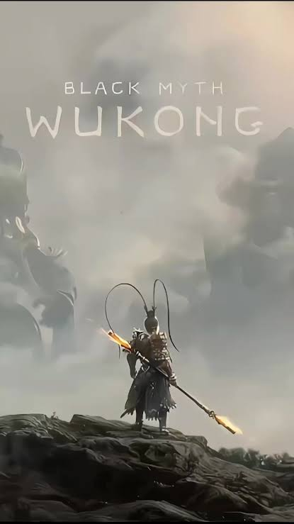

El Rey Mono
Inspirado en la novela clásica china Viaje al Oeste, este título combina una dificultad retadora con gráficos de última generación.

Habilidades Destacadas
- Alargar y encoger el bastón a voluntad.
- Transformarse en diferentes criaturas e insectos.
- Crear clones de pelo para distraer enemigos.
- Inmovilizar a los jefes con magia temporal.